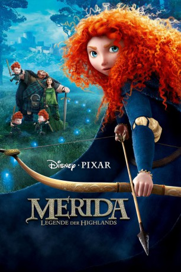

Alternativ: Brave
Auszeichnungen: 1 Oscars gewonnen 1 GoldenGlobes gewonnen 1 BAFTA-Awards gewonnen gesehen am 25.06.2015
gesehen am 25.06.2015
 
 IMDB-Wertung: 7.1 / 10
IMDB-Wertung: 7.1 / 10  Metascore:
Metascore: 
Merida – Legende der Highlands spielt im Schottland des 10. Jahrhunderts. König Fergus und Königin Elinor haben es nicht leicht. Ihre Tochter Merida, ein Ass im Bogenschießen, ist ein echter Wildfang und Sturkopf. In ihrem Ungestüm verletzt die Prinzessin alte Traditionen, indem sie bei einem Turnier mit ihrer Schussfertigkeit auftrumpft, die offiziellen Teilnehmer brüskiert und damit den Zorn der schottischen Lords auf sich zieht. Als sie dadurch das Königreich in ein Chaos stürzt, bittet sie eine weise alte Frau um Hilfe, die ihr einen verhängnisvollen Wunsch gewährt. Um ihre Fehler wieder gut zu machen, muss Merida lernen, was wahrer Mut bedeutet und so den Fluch aufheben, bevor es zu spät ist.
Jahr: 2012
Dauer: 93 Minuten
FSK: 6
Land: USA Studio: Walt Disney Studios Motion PicturesTonspuren: DD5.1 - ,
Untertitel:
Auflösung: 1080p (1920x800) Größe: 3665 MB
Genre: Animation/Trick, Abenteuer, Komödie, Familie, Fantasy
Regisseur: Mark Andrews, Brenda Chapman, Steve Purcell
Drehbuch: Brenda Chapman, Mark Andrews, Steve Purcell, Brenda Chapman, Irene Mecchi
Soundtrack: Patrick Doyle
Darsteller:
Datei: X:\Kinder Disney HD\2000-2018\Merida - Legende der Highlands (2012, FSK6, 1920x800) 3D.mkv seit 14.03.2015
Festplatte: Kinder-Filme+Trick
 Es gibt insgesamt 45 Filme in der Gruppe 'Kinder Disney HD\2000-2018'
Es gibt insgesamt 45 Filme in der Gruppe 'Kinder Disney HD\2000-2018'